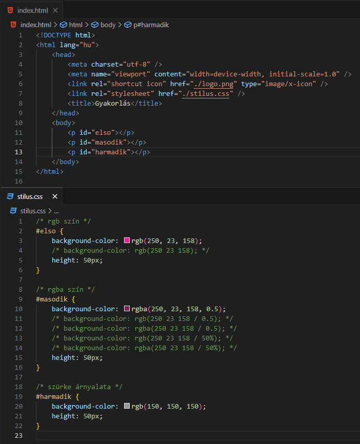
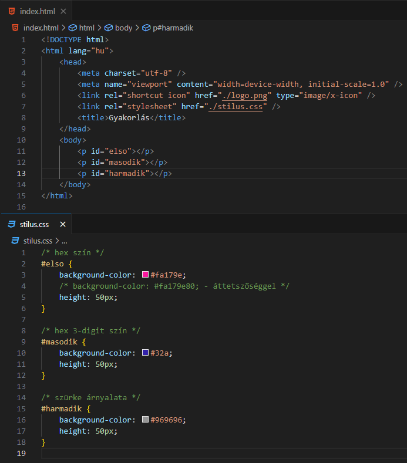
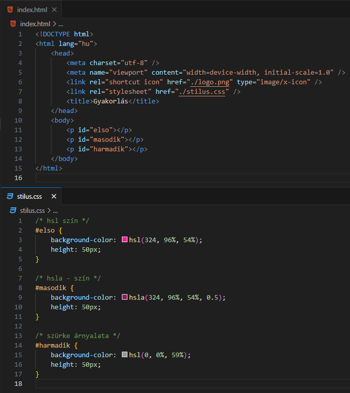

Színek - colors:
-
Színértéket a következő CSS tulajdonságokhoz (property) tudunk rendelni:
- color
- background-color
- border
- outline
-
A színeket a weboldalakon többféleképpen is megadhatjuk.
-
Szín névvel (color name): a
webprogramozásban 140 előredefiniált szín létezik:
Szín nevek
-
RGB színnel: ebben az esetben a
jelölés:
color=rgb(r, g, b); vagy
color=rgb(r g b);
ahol az r (red),
g (green),
b (blue) értékek a [0, 255]
intervallumból veszik az értéket.
-
A szürke árnyalai előállíthatók, ha a három értéket
egyenlőnek vesszük. Például.
color=rgb(150, 150, 150); vagy
color=rgb(150 150 150);
-
RGBA színnel: ebben az esetben a
jelölés:
color=rgba(r, g, b, a); vagy
color=rgb(r g b / a); vagy
color=rgba(r g b / a);
ahol az r (red),
g (green),
b (blue) értékek a [0, 255]
intervallumból veszik az értéket, míg az
a (alfa csatorna - alpha channel)
a [0, 1] intervallumból. Minél kisebb az
a értéke, annál áttetszőbb. Az
a értékét meg lehet adni
százalékos formában (50%) is.

-
HEX színnel: ebben az esetben a
jelölés:
color=#rrggbb;
ahol az rr (red),
gg (green),
bb (blue) értékek a [00, ff]
intervallumból veszik az értéket.
-
A szürke árnyalai előállíthatók, ha a három értéket
egyenlőnek vesszük. Például.
color=#969696;
-
HEX 3-digit színnel: ebben az
esetben a jelölés:
color=#rgb; ( =
color=#rrggbb;)
ahol az r (red),
g (green),
b (blue) értékek a [0, f]
intervallumból veszik az értéket.
-
HEX színek esetén is használhatjuk az áttetszőséget. Ekkor:
color=#rrggbbaa;
ahol az
aa (alfa csatorna - alpha channel)
érték is a [00, ff] intervallumból veszi az értékét.

-
HSL színnel: ebben az esetben a
jelölés:
color=hsl(hue, saturation, lightness);
-
A hue - árnyalat a [0,
360] intervallumból (színkerék) veszi az értékét. 0
- piros, 120 - zöld, 240 - kék.
-
A
saturation - telítettség
a [0%, 100%] intervallumból veszi az értékét. 0%
szürke árnyalata, 100% teljes szín.
-
A
lightness - világosság
a [0%, 100%] intervallumból veszi az értéket. 0% -
fekete, 100% - fehér.
-
A szürke árnyalai előállíthatók, ha az árnyalatot 0-ra, a
telítettséget 0%-ra állítjuk be, és a világosságot
változtatjuk. egyenlőnek vesszük. Például.
color=hsl(0, 0%, 59%);
-
HSLA színnel: ebben az esetben a
jelölés:
color=hsla(hue, saturation, lightness, a);
-
A hue - árnyalat a [0,
360] intervallumból (színkerék) veszi az értékét. 0
- piros, 120 - zöld, 240 - kék.
-
A
saturation - telítettség
a [0%, 100%] intervallumból veszi az értékét. 0%
szürke árnyalata, 100% teljes szín.
-
A
lightness - világosság
a [0%, 100%] intervallumból veszi az értéket. 0% -
fekete, 100% - fehér.
-
Az
a - alfa csatorna (alpha channel)
a [0, 1] intervallumból veszi az értékét. Minél
kisebb az a értéke,
annál áttetszőbb.

Források:
w3schools/css
mdn/css